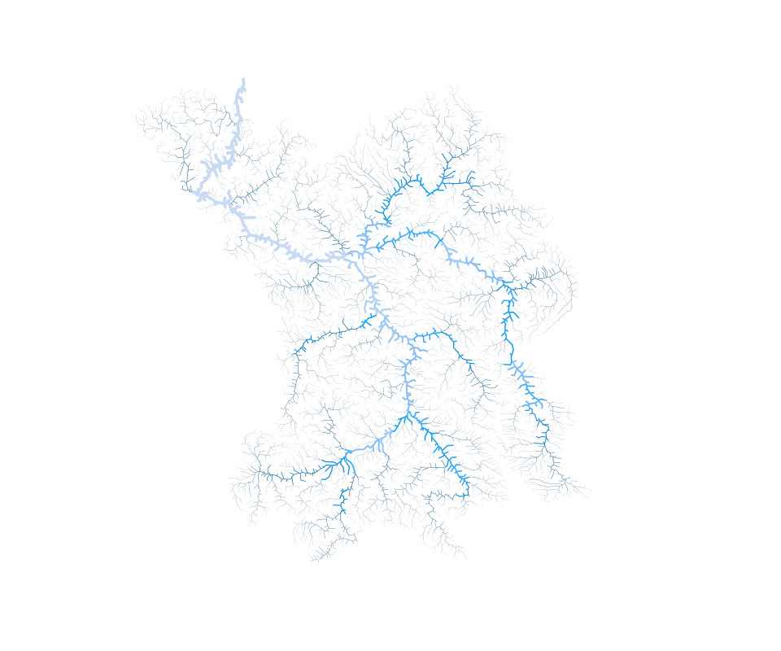

Дунай

Дністер

Вісла
Південний Буг

Дніпро

Дон

Ми нанесли на карту найбільші річкові басейни України. Користувачу потрібно клікнути на один з басейнів у меню ліворуч для того, щоб почати працювати з картою.
Після кліку карта прибирає всю зайву інформацію і залишає тільки обраний басейн та іконки (у вигляді «квітки») на ньому. Ними на карті позначені місця, де співробітники Держводагенства забирають воду для аналізів. Якщо у «квітки» червоніють пелюстки ‒ значить, забруднення перевищує норму. Наблизити карту можна за допомогою подвійного кліку.
Якщо натиснути на іконку, на екрані з’являється нове вікно з графіком та збільшеною «квіткою». На графіку можна відстежити, як змінювалась концентрація речовини-забруднювача в минулому, і якою вона є зараз. Що ж до «квітки», кожна її пелюстка позначає певний забруднювач. На пелюстки можна натискати для того, щоб побачити графік для обраного пказника.
У верхній частині екрану є кнопка «Хто забруднює річки в твоїй області». Натисніть її й оберіть свою область зі списку. Ви отримаєте список підприємств, які забруднюють річки у вашому регіоні. Ці підприємства відповідальні за значну частину забруднення в річках. На жаль, даних про точні координати, де саме вони скидають речовини-забруднювачі, в нас немає.